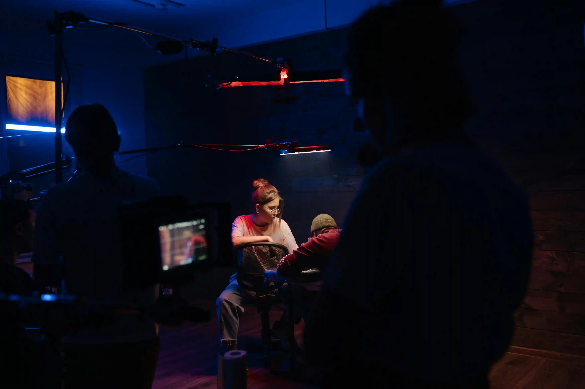
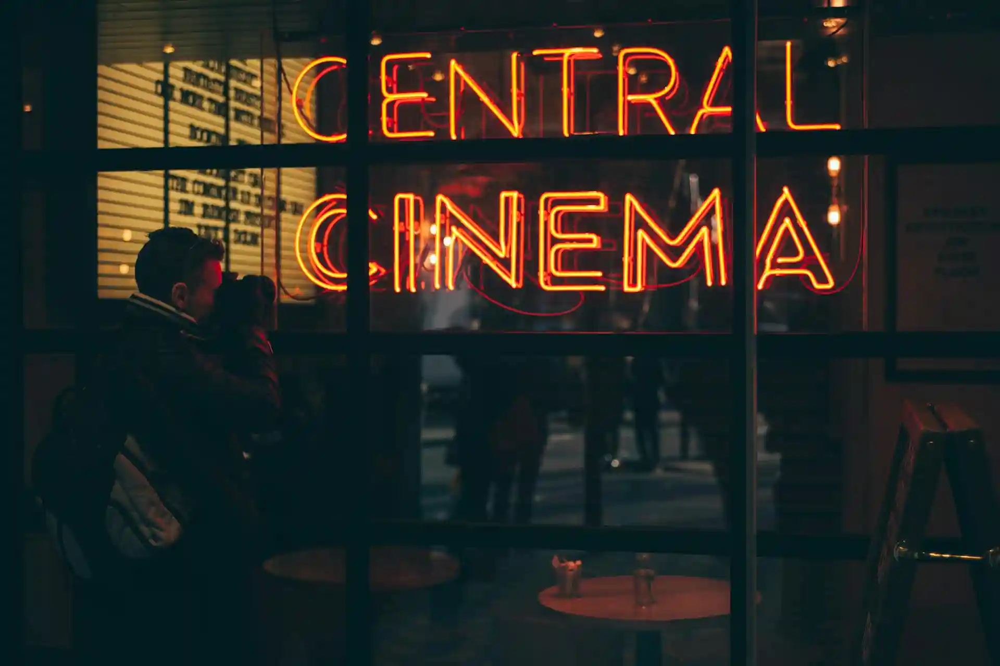
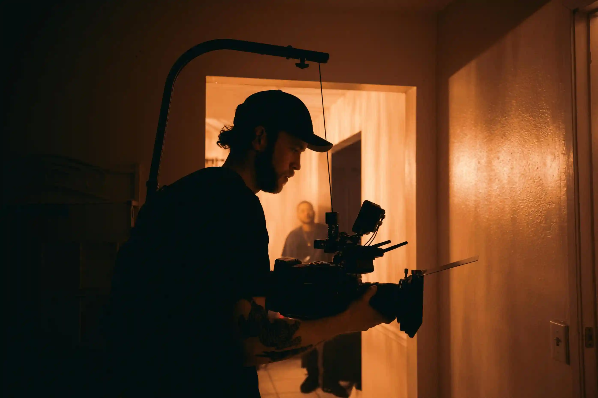
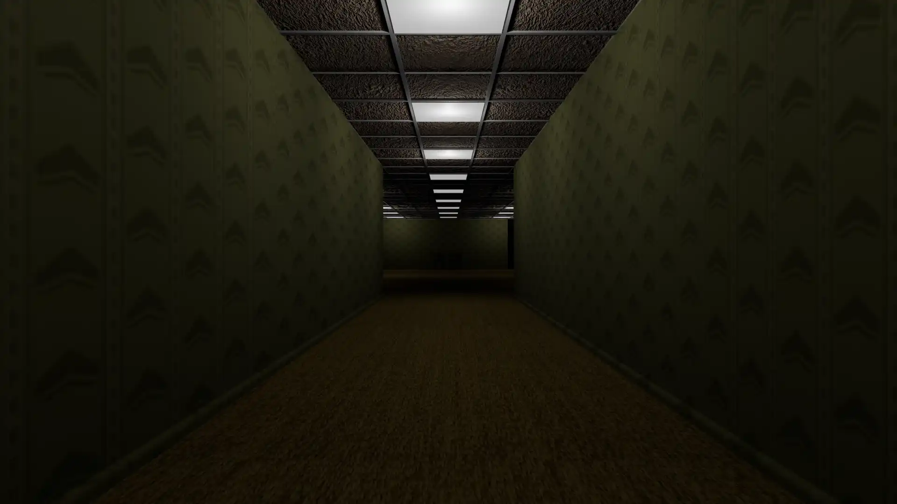
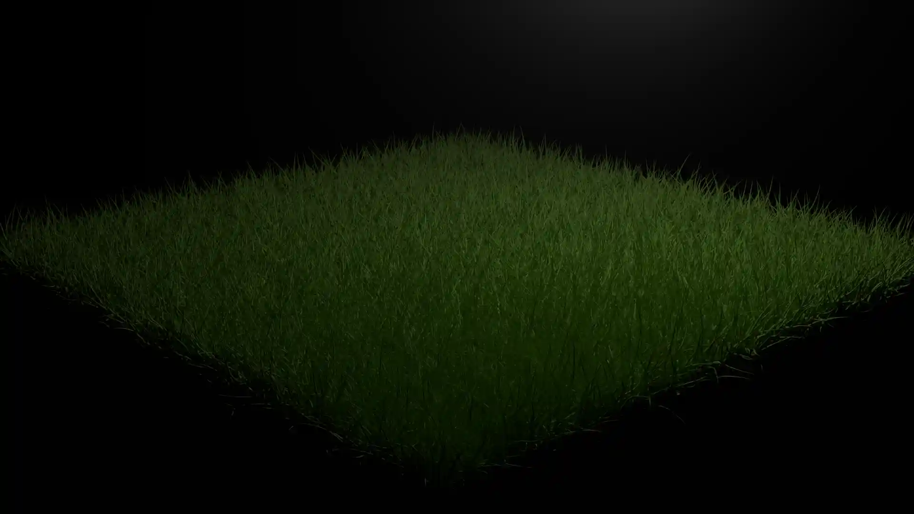
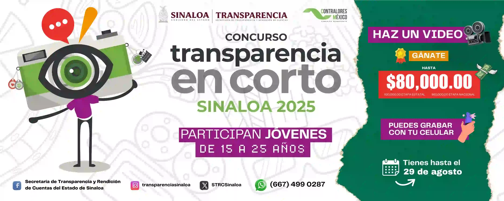

#AfterEffects
#DaVinciResolve
#Blender
#Youtube
#C.E.1024STUDIO
#Arte
#Cinematografia
#Cultura
#Social
#Exito
#Culiacán
#Sinaloa
¿Que es C.E.1024STUDIO?
C.E.1024 STUDIO es una joven y prometedora organización con sede en Culiacán, Sinaloa, dedicada a la producción de cortometrajes, videoclips y todo tipo de proyectos cinematográficos.
Nuestra misión es brindar un espacio creativo donde talentos emergentes puedan explorar, desarrollar y demostrar sus habilidades en el mundo del cine. Creemos en el potencial de cada persona apasionada por la narrativa visual y ofrecemos una plataforma para transformar ideas en producciones de alto impacto.


Objetivo de C.E.1024STUDIO
En C.E.1024 STUDIO tenemos la meta de consolidarnos como una productora audiovisual de referencia en Culiacán, Sinaloa, generando colaboraciones con marcas, empresas y organizaciones a nivel local, nacional e internacional.
Además, buscamos impulsar a estudiantes de artes y a todas aquellas personas apasionadas por la cinematografía, ofreciéndoles la oportunidad de participar en la creación y desarrollo de proyectos innovadores que puedan ser presentados y difundidos en diferentes espacios.

Alumnos de Artes
Culiacán, Sinaloa, cuenta con diversas carreras de artes en varias universidades, y C.E.1024 STUDIO representa una oportunidad única para que los estudiantes fortalezcan y pongan a prueba sus conocimientos y habilidades.
En nuestros proyectos, los participantes podrán desplegar toda su creatividad e imaginación, contribuyendo a producciones audiovisuales con impacto real.
Si eres estudiante de artes —o simplemente un apasionado del cine— y deseas crear un proyecto cinematográfico, este es tu lugar. Ponte en contacto con nosotros a través de la sección Contacto y comienza a dar vida a tus ideas.
C.E.1024 es un espacio en que podrás hacer varias de tus ideas en realidad ya que contara con equipo necesario para la realización de diferentes proyectos.
PROYECTOS C.E.1024STUDIO

The Backrooms
The Backrooms será un cortometraje el cual se tiene pensado lanzar este año 2025 en la plataforma de YouTube, este proyecto se esta desarrollando con Blender.

Una Luz en la Obscuridad
Este proyecto será un pequeño cortometraje utilizando Blender en el cual seguiremos la historia de un pequeño robot y un gato que se encuentran en un lugar desconocido que tendrán un largo viaje en busca de un hogar(por ahora este proyecto es solo una idea y no un proyecto confirmado, por el momento C.E.1024 se enfocara en proyectos como "The Backrooms" y "Corto de Transparencia 2025").

Transparencia en corto 2025
Este proyecto se realizara de acuerdo con las indicaciones que se ven en la pagina oficial de Transparencia Sinaloa.

La Existencia
Mi Existencia es un proyecto con un contenido de ciencia ficción que aun esta en desarrollo el cual será una serie de 8 episodios con una duracion aproximada de 20 a 30 minutos cada uno. Esta serie será algo nuevo ya que tanto como los personajes y escenarios en los que se llevara a cabo esta historia será algo nunca antes visto dándole una nueva vista a la vida y existencia.